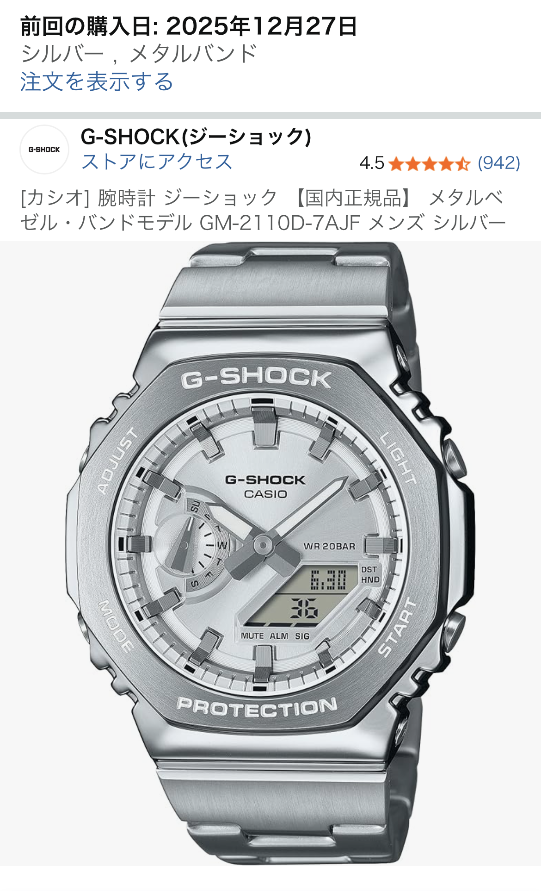

「フルメタル風のG-SHOCKが欲しいけれど、いきなり高額モデルに行くのは迷う」──そんな人にちょうど刺さるのが、 腕時計 ジーショック 【国内正規品】 メタルベゼル・バンドモデル GM-2110D-7AJF メンズ シルバーです。 実際の口コミでは星5つ中5つ評価、「ほぼフルメタルで定価6万円はコスパが良い」と高く評価されています。
ケースと文字盤がシルバーで統一されているため、腕元の印象が非常にクリーンで、パートナーからも「オシャレ」と好評だったという声も。 ビジネスカジュアルから休日のデニムスタイルまで、幅広いコーデに合わせやすいのがこのモデルの強みです。
GM-2110D-7AJFのメリット：メタルの質感とコスパが光る
一番の魅力は、やはりメタルベゼル＋メタルバンドによる高級感です。 樹脂ベルトのG-SHOCKと比べると、腕に乗せたときの「大人っぽさ」が段違いで、スーツスタイルにも違和感なく溶け込みます。
口コミでは「ほぼフルメタルで定価6万はおそらくコスパ良い」との声があり、フルメタルシリーズより価格を抑えつつ、 見た目の満足度はしっかり確保できるバランス型モデルと言えます。 ベルト調整も細いピンとYouTube動画を見ながらで問題なくできたという体験談があり、初めてのメタルバンドでもハードルはそこまで高くありません。
また、カシオの決算資料でも「2100番台」が売上を牽引しているとされており、シリーズ全体としても人気が高いライン。 トレンドから外れにくいデザインなので、長く使っても「古くさく見えにくい」のも安心材料です。
GM-2110D-7AJFのデメリット：フルメタルではない構造と見た目のボリューム感
一方で、実際に使った人だからこそ気づくデメリットもあります。 口コミで挙げられていたポイントは次の3つです。
- 裏面が樹脂で抑える構造になっており、実は完全なフルメタルではない
- その構造の影響で、八角形フレームの上下が樹脂で持ち上げられ、手首側が少し浮いて見た目が想像より大きく感じる
- ベルトの作りは「かなり普通」で、超高級感というほどではない
ただし、レビュー投稿者は「上記デメリットは自分は気にならない」とも書いており、 特にアナログ時計は視認性より見た目重視という価値観の人にとっては、十分満足度の高い仕上がりになっています。 実用性一点張りではなく、「メタルG-SHOCKを気軽に楽しみたい」というニーズに寄せたモデルと捉えると、評価はぐっと上がります。
他のG-SHOCKメタルモデルとの比較視点
フルメタルのG-SHOCK（例：フルメタル5600系など）は、ケース裏も含めて金属で統一されている分、価格も一気に跳ね上がります。 一方、GM-2110D-7AJFは裏面に樹脂を使うことでコストを抑えつつ、見た目のメタル感はしっかり確保しているのが特徴です。
「完全フルメタルであること」にこだわるなら上位モデルを検討すべきですが、 「6万円前後でメタルG-SHOCKの雰囲気を楽しみたい」「オンオフ両方で使える1本が欲しい」という人には、 GM-2110D-7AJFはかなりバランスの良い選択肢になります。
こんな人にGM-2110D-7AJFをおすすめしたい
以上を踏まえると、GM-2110D-7AJFは次のような人におすすめできます。
- メタルG-SHOCKのデザインが好きだが、いきなり高額フルメタルには踏み切れない人
- ビジネスカジュアルにも合うG-SHOCKを1本持っておきたい人
- 見た目重視で、多少の樹脂パーツや浮き感はあまり気にならない人
コスパ重視でメタル系G-SHOCKを選ぶなら、口コミで星5評価が付いているこのモデルは有力候補のひとつです。 気になる場合は、実際の写真や装着イメージをチェックしつつ、自分の手首とのバランスをイメージしてみてください。
※価格・在庫状況は記事閲覧時点で変更されている場合があります。最新情報はAmazonの商品ページをご確認ください。